Handbuch für PartyDekoMiet und das Studio · Stand November 2026
Dieses Handbuch erklärt alles, was Sie selbst im Dashboard einstellen können, und wie sich der Assistent auf WhatsApp verhält. Sie brauchen dafür keine technischen Kenntnisse und müssen nichts installieren. Alles läuft im Browser, auch auf dem Handy.
Sie haben zwei Betriebe, und für jeden einen eigenen WhatsApp-Assistenten. Beide laufen rund um die Uhr und beantworten Nachrichten selbständig.
| PartyDekoMiet | Vermietung von Partydekoration. Der Assistent beantwortet Anfragen, schlägt Artikel vor und nimmt Buchungen auf. |
| Studio | Termine bei den Professionals. Der Assistent beantwortet Fragen, nennt Leistungen und Preise, schickt Fotos und nimmt Terminanfragen auf. |
Dazu kommen die eigenen Nummern der Professionals. Insgesamt sind bis zu sieben Nummern möglich – PartyDekoMiet, das Studio und bis zu fünf weitere.
Jede Nummer hat ihre eigenen Chats, ihre eigenen Kundendaten und ihre eigenen Termine. Dieselbe Person kann an zwei Nummern schreiben, ohne dass etwas vermischt wird. Die Vermietung erfährt nichts vom Studio und umgekehrt.
Alles, was der Assistent sagt, stammt aus dem Dashboard: Leistungen, Preise, Öffnungszeiten, Beschreibungen, Fragen und Antworten. Sie ändern es selbst, und es gilt ab der nächsten Nachricht. Niemand muss dafür etwas programmieren.
Sie öffnen das Dashboard im Browser und melden sich mit Ihrem Passwort an. Danach sehen Sie oben links ein Auswahlfeld mit allen Nummern.
Das Dashboard zeigt immer nur eine Nummer auf einmal. Was Sie sehen – Chats, Termine, Services – gehört zu der Nummer, die oben links ausgewählt ist. Wenn etwas fehlt, ist meistens die falsche Nummer gewählt.
Unten links schalten Sie zwischen DE und EN um. Das ändert nur die Sprache des Dashboards, nicht die Sprache, in der der Assistent mit Kunden spricht – die stellen Sie in den Einstellungen ein (Kapitel 11).
Auf dem Handy sitzt das Menü unten am Bildschirmrand: vier Symbole und Mehr für die übrigen Seiten.
Die erste Seite nach dem Anmelden. Oben sehen Sie, ob der Assistent läuft, und können ihn mit dem Schalter aus- und wieder einschalten.
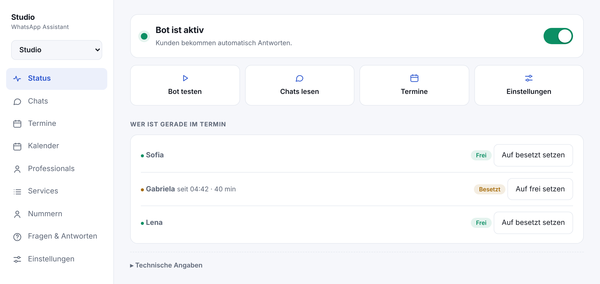
| Bot ist aktiv | Der Schalter rechts. Ausgeschaltet antwortet niemand mehr – Nachrichten kommen trotzdem an und sind unter Chats sichtbar. |
| Bot testen | Sie schreiben hier selbst mit dem Assistenten, ohne WhatsApp. Gut, um nach einer Änderung zu prüfen, was er jetzt sagt. |
| Wer ist gerade im Termin | Alle Professionals mit „Frei" oder „Besetzt". Mit Auf besetzt setzen nehmen Sie jemanden von Hand heraus; der Assistent bietet sie dann heute nicht mehr an. |
| Technische Angaben | Zugeklappt, weil es Sie im Alltag nichts angeht. Nur aufmachen, wenn wir Sie danach fragen. |
Hier steht jede Unterhaltung, die der Assistent geführt hat. Links die Liste, rechts der Verlauf.
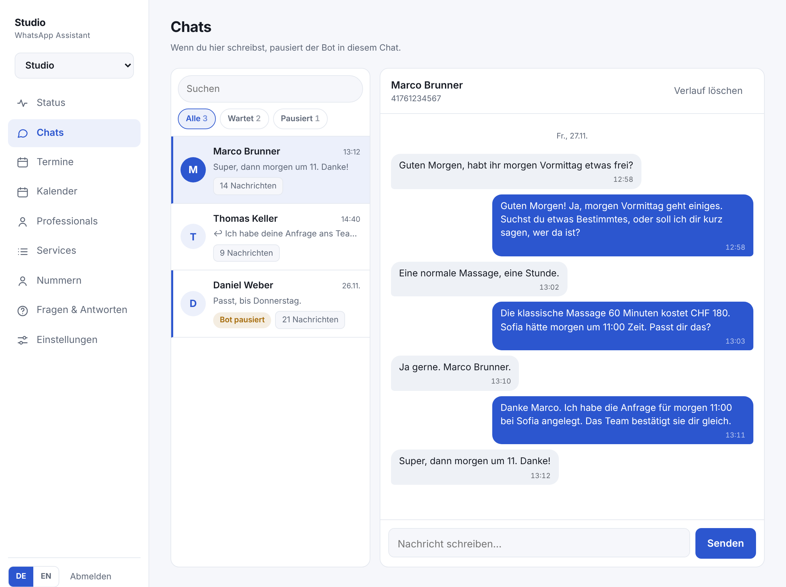
Schreiben Sie einem Kunden von Hand auf WhatsApp, merkt der Assistent das und mischt sich in diesem Chat nicht mehr ein. Sie übernehmen, ohne etwas umstellen zu müssen. Nach einiger Zeit macht er wieder weiter; Sie sehen pausierte Chats in der Liste markiert.
Verlauf löschen entfernt die Unterhaltung aus dem Dashboard. Auf WhatsApp bleibt sie bestehen – gelöscht wird nur, was hier gespeichert ist.
Jede Terminanfrage landet hier. Eine Anfrage ist kein Termin: sie bleibt offen, bis jemand sie bestätigt.
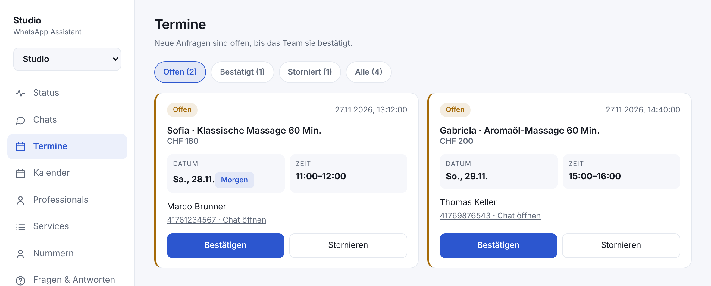
| Offen | Neu hereingekommen, noch nicht entschieden. Der Kunde weiss, dass es noch nicht fix ist. |
| Bestätigen | Der Termin gilt. Der Kunde bekommt automatisch eine Nachricht, und der Kalendereintrag wird gesetzt. |
| Absagen | Der Kunde bekommt ebenfalls automatisch Bescheid, und die Zeit wird wieder frei. |
| Stornierte löschen | Unter dem Filter „Storniert". Räumt abgesagte Einträge endgültig weg. Offene und bestätigte werden nie angerührt. |
Das ist Absicht. Erst wenn Sie – oder die Professional auf ihrem eigenen Telefon – bestätigen, geht die Nachricht an den Kunden hinaus.
Der Monat auf einen Blick: bestätigte Termine, offene Anfragen und von Ihnen geblockte Zeiten.
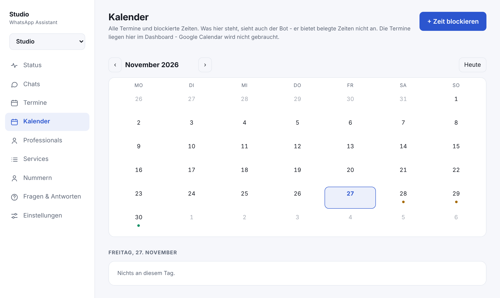
Sie können Tage oder Zeiten selbst blockieren – Ferien, ein Feiertag, ein privater Termin. Geblockte Zeit bietet der Assistent nicht mehr an.
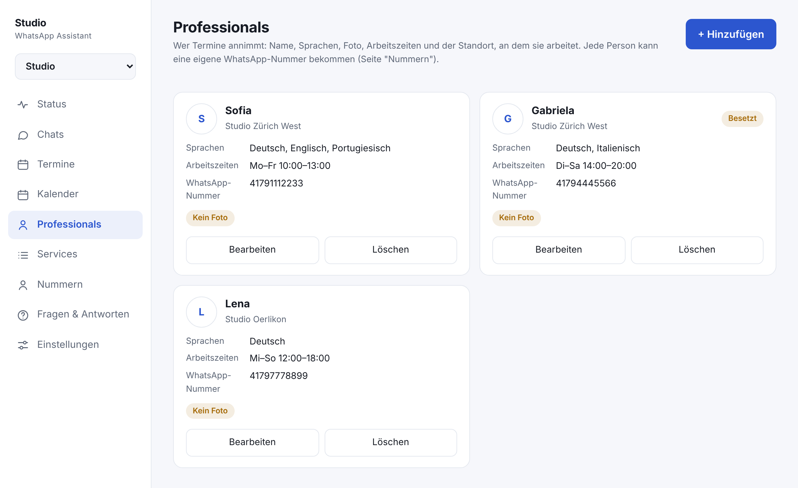
| Name | So nennt der Assistent sie gegenüber Kunden. |
| Standort | Wo sie arbeitet. Die Adresse gibt der Assistent heraus, wenn jemand fragt, wohin er kommen soll. |
| Arbeitszeiten | Freier Text, zum Beispiel „Mo–Fr 10:00–13:00". Der Assistent nennt sie auf Nachfrage. |
| Sprachen | Welche Sprachen sie spricht. |
| WhatsApp-Nummer | Ihre eigene Nummer. Siehe Kapitel 12 und 13. |
| Foto | Wird auf Anfrage mitgeschickt. Ohne Foto schickt der Assistent keines. |
| Aktiv | Abgeschaltet verschwindet sie aus allen Antworten, bleibt aber im Dashboard erhalten. |
Das Wichtigste im ganzen Dashboard. Nur was hier steht, darf der Assistent anbieten, und nur zu diesem Preis.
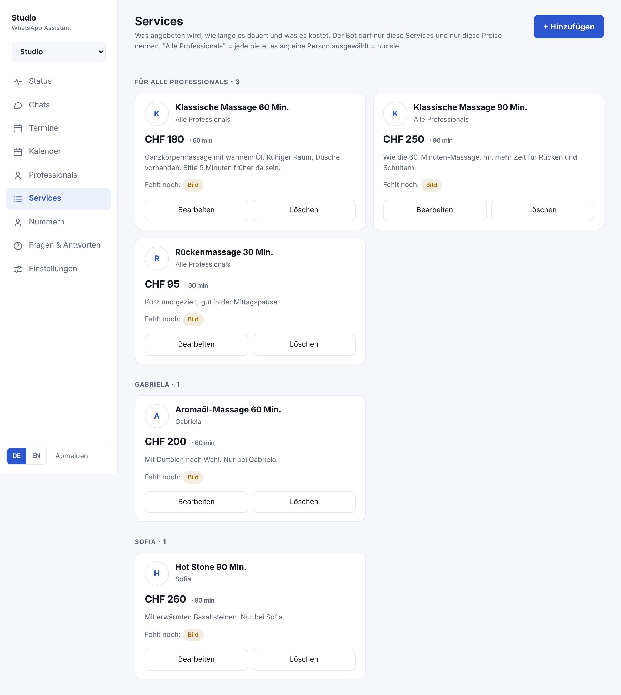
| Name | Wie die Leistung heisst. |
| Professional | Leer = alle bieten sie an. Mit Namen = nur diese eine. |
| Dauer | In Minuten. Daraus rechnet der Assistent, wann der Termin endet. |
| Preis | In CHF. Einen anderen Preis nennt der Assistent nie. |
| Beschreibung | Was dazugehört, in Ihren eigenen Worten. Der Assistent darf alles sagen, was hier steht – also lieber ein paar Zeilen mehr. |
Was Sie hier hineinschreiben, darf der Assistent weitergeben. Was Sie nicht hineinschreiben, erfindet er nicht. Wenn er also etwas nicht sagt, das er sagen sollte, fehlt es meistens in diesem Feld.
Jede Professional kann ihre eigene WhatsApp-Nummer bekommen. Kunden schreiben dann direkt ihr, und sie sieht nur ihre eigenen Chats und Termine.
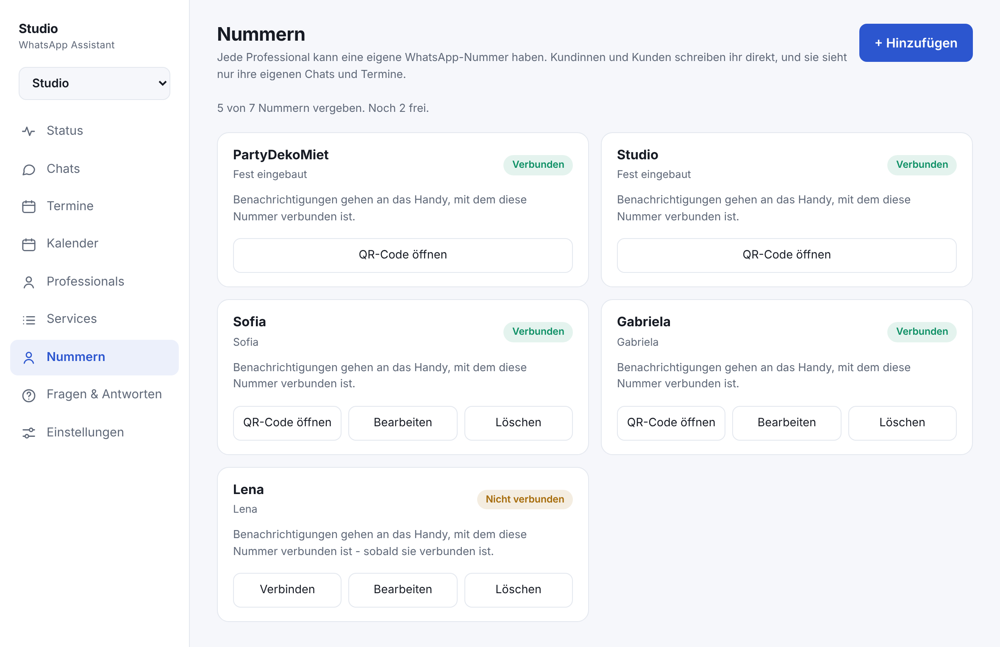
Der QR-Code kann nur von dem Telefon gescannt werden, dessen Nummer verbunden werden soll. Aus der Ferne geht das nicht.
Entfernen trennt die Verbindung und löscht die Anmeldung. Der Eintrag verschwindet danach von selbst aus „Verknüpfte Geräte" auf ihrem Telefon. Die Chats bleiben im Dashboard erhalten.
Für alles, was immer wieder gefragt wird: Parkplätze, Zahlung, Anfahrt. Sie schreiben die Frage und die Antwort, der Assistent benutzt sie wörtlich.
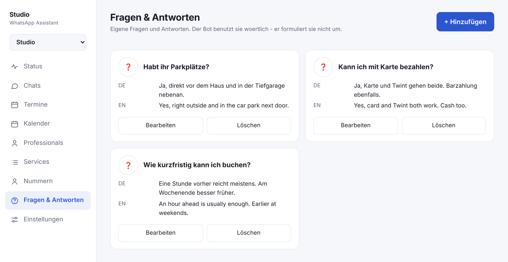
Eine Antwort auf Deutsch genügt; wenn Sie zusätzlich Englisch eintragen, nimmt der Assistent die passende. Mit Aktiv schalten Sie einen Eintrag vorübergehend ab, ohne ihn zu löschen.
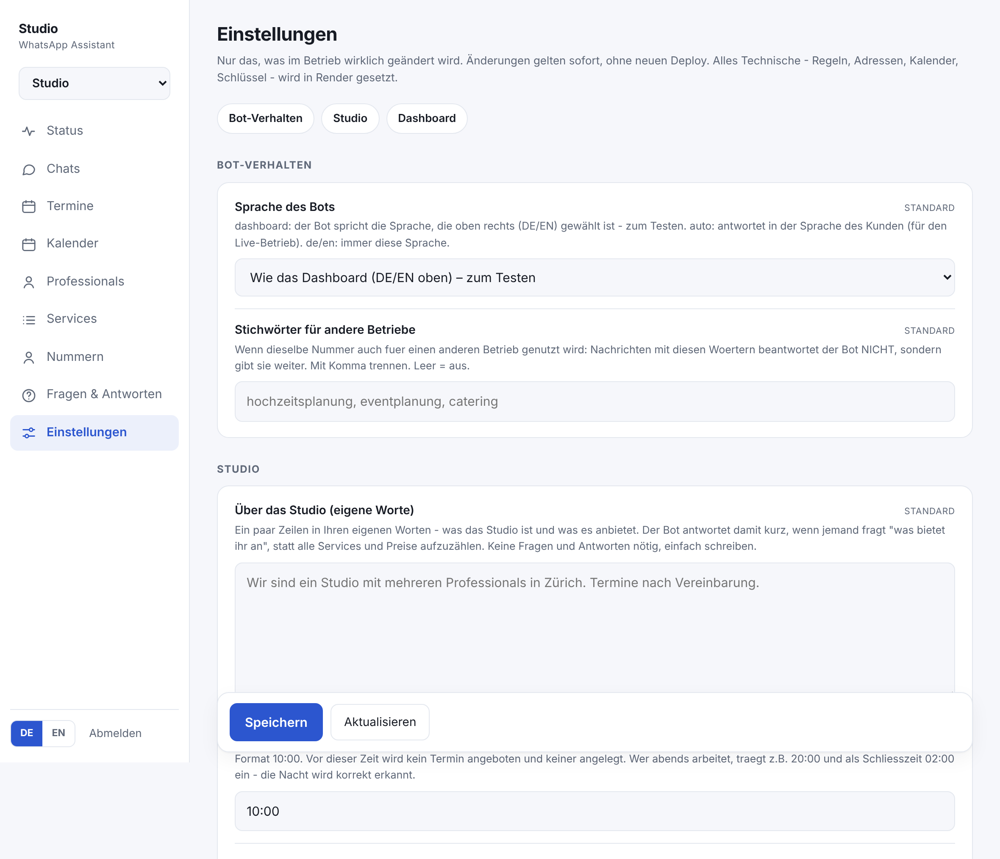
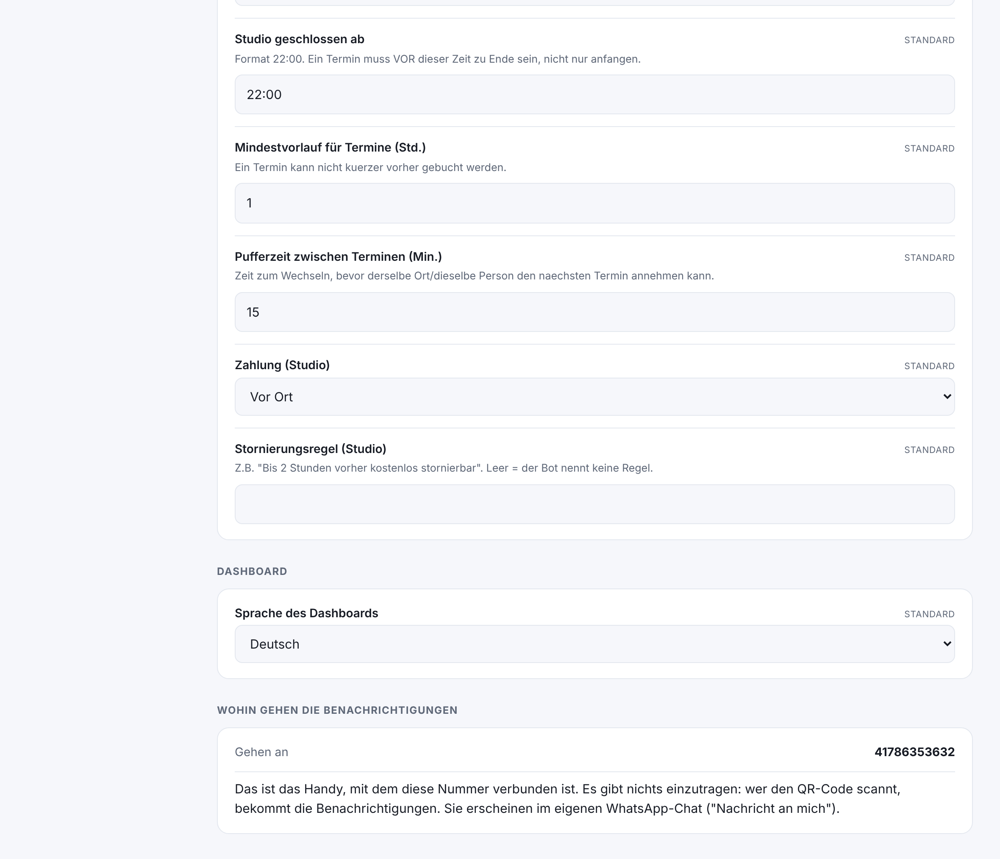
| Feld | Was es bewirkt |
|---|---|
| Sprache des Bots | Automatisch heisst: der Assistent antwortet in der Sprache, in der geschrieben wurde. Sie können ihn auch auf eine Sprache festlegen. |
| Stichwörter für andere Betriebe | Schreibt jemand an die eine Nummer über den anderen Betrieb, antwortet der Assistent freundlich, dass er hier falsch ist, und meldet es Ihnen. |
| Über das Studio (eigene Worte) | Ein paar Zeilen über den Betrieb. Genau diesen Text benutzt der Assistent, wenn jemand fragt, was Sie anbieten – statt die ganze Preisliste vorzulesen. |
| Studio geöffnet ab | Format 10:00. Vor dieser Zeit wird kein Termin angeboten und keiner angelegt. |
| Studio geschlossen ab | Format 22:00. Ein Termin muss vor dieser Zeit zu Ende sein, nicht nur anfangen. Wer abends arbeitet, trägt zum Beispiel 20:00 und 02:00 ein – die Nacht wird richtig erkannt. |
| Mindestvorlauf für Termine | In Stunden. Kurzfristiger kann niemand buchen. |
| Pufferzeit zwischen Terminen | In Minuten. Zeit zum Wechseln, bevor dieselbe Person den nächsten Termin annehmen kann. |
| Zahlung (Studio) | Wie bezahlt wird. Der Assistent verlangt nie Geld und schickt nie einen Zahlungslink. |
| Stornierungsregel (Studio) | Ihr eigener Text. Der Assistent gibt ihn weiter, wenn jemand nach Absagen fragt. |
| Sprache des Dashboards | Nur diese Oberfläche, nicht die Antworten an Kunden. |
Ohne richtige Öffnungszeiten kann der Assistent einen Termin mitten in der Nacht annehmen, weil für ihn dann niemand im Kalender steht. Tragen Sie diese beiden Felder als Erstes ein.
Wählt man oben links ihre Nummer, zeigt das Dashboard nur noch sie: ihre Daten, ihre Chats, ihre Termine, ihr Kalender.
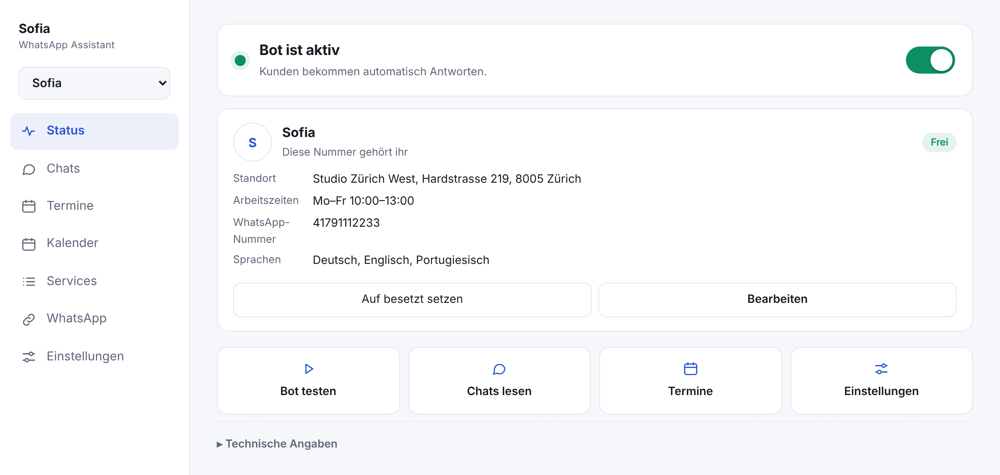
Er kann keine Kollegin anbieten, keinen fremden Preis nennen und nicht das ganze Team aufzählen. Die Leistungen, die alle anbieten, bleiben ihr erhalten.
Sie schreibt dafür in ihren eigenen Chat auf WhatsApp – den Chat mit sich selbst. Tippen oder eine Sprachnachricht, beides geht.
| J oder N | Eine Terminanfrage bestätigen oder absagen. Der Kunde bekommt danach automatisch Bescheid. |
| „besetzt" / „frei" | Sie nimmt sich heraus oder stellt sich wieder zur Verfügung. Besetzt wird sie heute nicht mehr angeboten. |
| „der Kunde bleibt noch eine halbe Stunde" | Verlängert den laufenden Termin und den Kalendereintrag. |
Sind mehrere Anfragen offen, antwortet sie mit J oder N und dem Code, der in der Nachricht steht.
Benachrichtigungen gehen an das Telefon, auf dem die Nummer verbunden wurde – in dessen eigenen Chat „Nachricht an mich selbst". Es gibt nichts einzustellen und nichts, was man falsch eintragen kann.
Das bedeutet im Alltag:
„Nachricht an mich selbst" ist ein Chat, in den man selten schaut. Heften Sie ihn in WhatsApp oben an, damit keine Anfrage untergeht – und bitten Sie jede Professional, dasselbe auf ihrem Telefon zu tun.
Dieselbe Oberfläche, andere Begriffe. Oben links auf PartyDekoMiet umschalten.
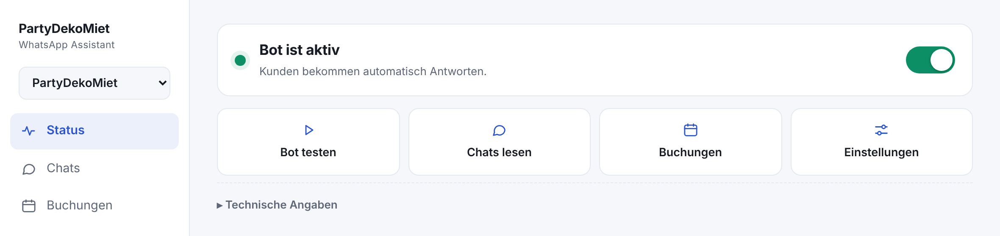
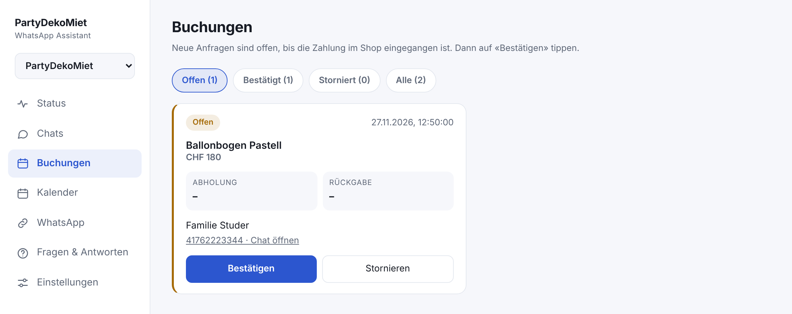
| Buchungen | Statt Terminen. Mit Abhol- und Rückgabedatum. |
| Artikel | Kommen aus Ihrem Shop, nicht aus dem Dashboard. Was dort nicht steht, bietet der Assistent nicht an. |
| Fragen & Antworten | Eigene Einträge, getrennt von denen des Studios. |
| Über den Betrieb | Dasselbe Feld wie beim Studio, mit eigenem Text. |
Auch hier gilt: eine Buchung ist erst verbindlich, wenn sie bestätigt wurde.
Diese Regeln stehen fest im Programm, nicht nur in einer Anweisung. Auch wenn ein Kunde hartnäckig nachfragt, hält sich der Assistent daran.
An einen Menschen übergibt er nur bei einer Beschwerde, einer Absage, einer Änderung an einem bestehenden Termin, einem Streit über den Preis oder einer Anfrage nach etwas, das es nicht gibt. Nicht, weil eine Nachricht unklar geschrieben war – dann fragt er nach.
| Beobachtung | Was zuerst zu prüfen ist |
|---|---|
| Der Assistent antwortet gar nicht | Status-Seite: Ist der Schalter oben an? Steht die Nummer auf „Verbunden"? |
| Er antwortet einem Kunden nicht mehr | Haben Sie diesem Kunden von Hand geschrieben? Dann hält er sich absichtlich heraus. Unter Chats sehen Sie es markiert. |
| „Nicht verbunden" bei einer Nummer | Unter Nummern auf Verbinden und den QR-Code mit dem richtigen Telefon neu scannen. |
| Er nennt eine Leistung nicht | Steht sie unter Services und ist sie aktiv? Was nicht dort steht, gibt es für ihn nicht. |
| Er sagt zu wenig über eine Leistung | Die Beschreibung bei dieser Leistung ergänzen. Er gibt nur weiter, was dort steht. |
| Termine zu ungewöhnlichen Zeiten | Öffnungszeiten in den Einstellungen prüfen. |
| Keine Benachrichtigungen | Im Chat „Nachricht an mich selbst" auf dem Telefon nachsehen, mit dem die Nummer verbunden wurde. |
Hilft nichts davon, melden Sie sich bitte mit der Uhrzeit und, wenn möglich, einem Bildschirmfoto der Unterhaltung. Damit ist die Ursache meistens schnell gefunden.